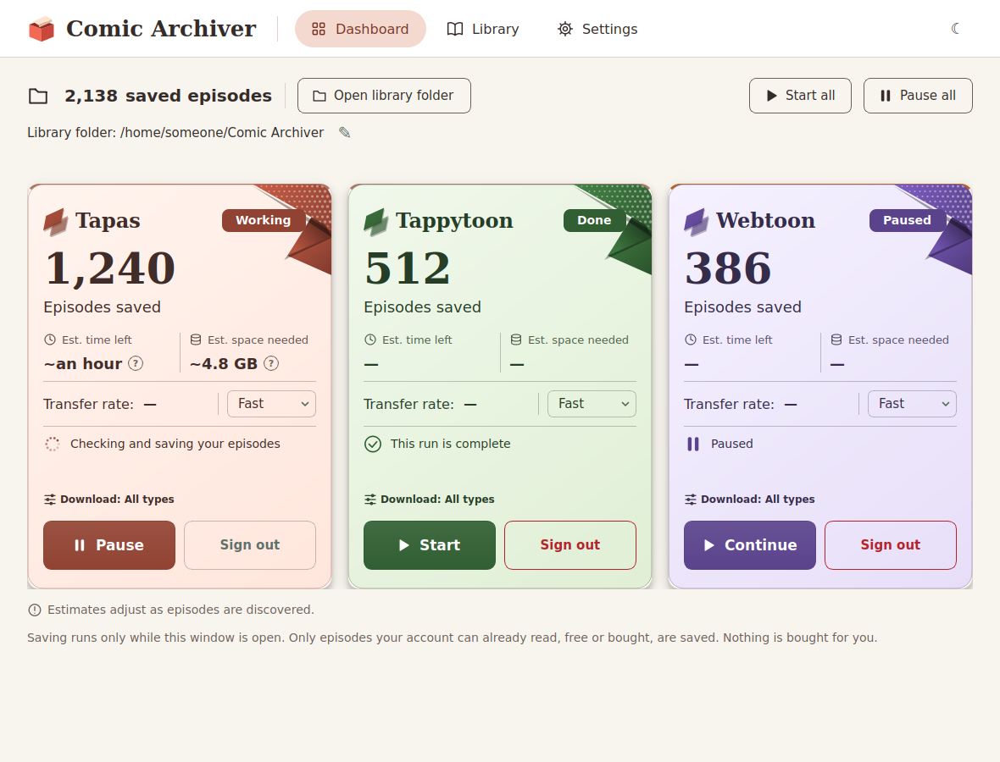
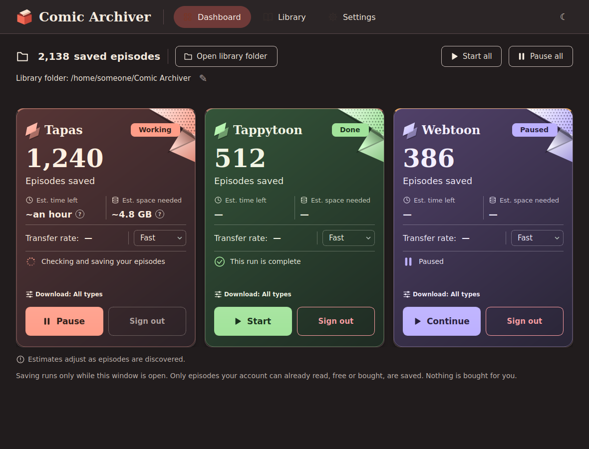

Tapas closes on 31 March 2027. Tapas says what you've unlocked there can't be moved to another app, and purchases aren't refunded. Save your library before it's gone.
Keep your own copy of the comics and novels you've bought.
Comic Archiver saves what you can read on Tapas, Tappytoon and Webtoon to your own computer. Sign in, press Start, and it works through your library.
Free and open source. Windows, Linux and Mac (Intel). No account, no tracking.

